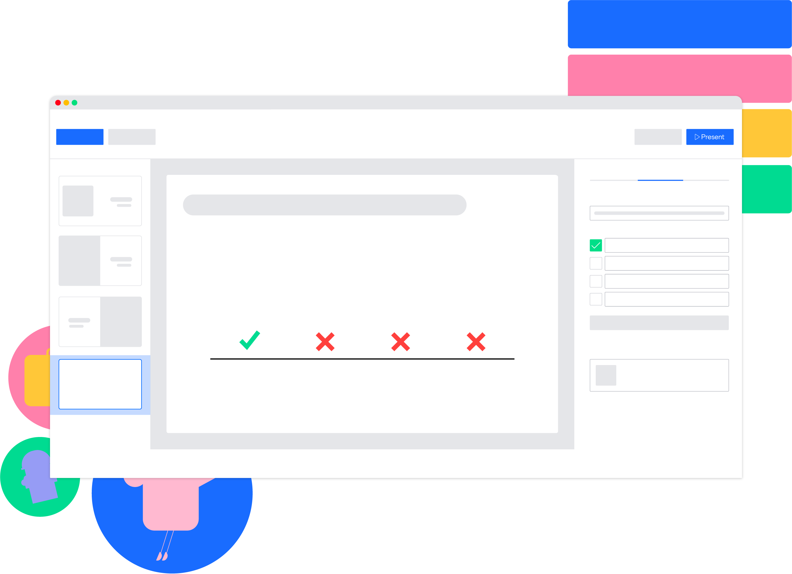

This is a Polling Website for Polling!!

Create and deliver online polls quickly and easily. If you don’t already have a Poll Site account, sign up for
free and you can create and launch your online poll in minutes.
Type your question then add answers. Hit 'Create Poll', the next steps are optional. No signup required.
Click Share and copy your poll Vote url to share with voters. You can also hit Embed to place the poll directly on
your website or blog.
Live graphs show your poll results immediately in easy to understand and read bar graph format. But final results don't always reveal the whole picture which is why our poll creator also displays results over time. The longitudinal graph provides a visual representation of when and not just what people voted for.
Advertisements make for a terrible user experience and detract from the polls, so no ads are shown on this website. StrawPoll.vote is run as a public service with no expectation of making money.